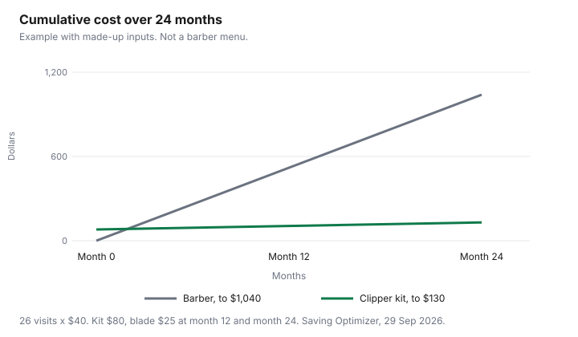

Personal Care · Canada
Cutting Hair at Home: Clipper Payback and Styles That Work
For a Canadian household, a home clipper kit pays for itself after the barber visits you skip cover its price: in a made-up example, an $80 kit against $40 cuts pays back in two visits. A barber visit every few weeks is a subscription you pay in cash. A clipper kit is cheaper only for the visits you stop booking, after blade oil and a replacement blade are in the total. This page is the payback method. It does not name a clipper, and it does not rank a barber. Kids’ cuts are on the kids’ haircut guide. The adult year, including a tip, is on the haircut costs guide. Nothing here is a haircut lesson you should treat as training, and nothing here is medical advice.
Key takeaways
- Payback is the kit price divided by the visit price of the appointments you will skip. Example with made-up inputs: $80 divided by $40 is two visits.
- Over 24 months in that same example, 26 barber visits at $40 are $1,040. The kit plus two made-up blades is $130. The lines are not a price survey.
- One guard, all over, is the home style. Layers, colour, and a shape you have not practised stay with a pro.
- Oil and blade changes follow the booklet. This page does not cite a replacement interval. The example puts a $25 blade at month 12 and month 24.
- Hair clippers are in heading 85.10, and no 85.10 item is on the surtax schedules. How a specific product is classified: check with CBSA (1-800-461-9999) or your carrier.
Clipper and trimmer costs
Write three numbers before you buy: the kit, the cheapest guard set that actually fits that clipper, and one replacement blade. A trimmer for edges is a fourth number, and only if you will use it.
This page does not quote a shelf price. The Amazon.ca price guide is how to watch a listing. A store price you see tonight goes in your own column. A made-up kit of $80 is used later only so the division is visible.
A used kit is cheaper until it is the wrong voltage, a missing guard, or a model you should not plug in. Search the brand and model on Health Canada’s recalls and safety alerts page, recalls-rappels.canada.ca, as of 29 Sep 2026. That page is a search. This guide does not cite a clipper recall. Heading 85.10 of the 2026 Customs Tariff covers shavers, hair clippers and hair-removing appliances with a self-contained electric motor, and no 85.10 item appears in the United States Surtax Order (2026), as of 29 Sep 2026. How a specific product is classified: check with CBSA (1-800-461-9999) or your carrier. Goods that are not marked as a good of the United States are not subject to this surtax. Ordinary duty and tax can still apply. How and when a courier or Canada Post collects the surtax on a small personal order, and whether a brokerage or handling fee is added, is not stated here. Check with CBSA (1-800-461-9999) or your carrier before you treat a checkout price as the landed cost.
Payback vs barber visits
Divide the kit by one visit only after you have named the visit you will skip. Example with made-up inputs.
The barber visit is $40. You currently go every four weeks. That is 13 visits in 52 weeks, and 26 visits in 24 months. Twenty-six times $40 is $1,040. The kit is $80. Eighty divided by 40 is 2, so two skipped visits cover the kit inside this example, before a blade. If you skip none, payback is never. The kit sits beside the barber bill.
Put the blade in the same sum. The example adds $25 at month 12 and $25 at month 24. Cumulative clipper cost is $80 at the start, $105 at month 12, and $130 at month 24. Barber cumulative cost is $0, then $520 at month 12 (13 times $40), then $1,040 at month 24. Your blank column replaces every one of those figures. A tip, if you pay one, belongs on the barber side. The haircut guide is where a tip sits inside a year. This page does not set a tip percent.
Styles suited to home cuts
Home is the cut you can check with your fingers and a mirror: one length, all over, with a guard you can put back on the same way next time. A buzz that is the same guard from front to crown is the same idea. Tidying the neck and the sideburns between professional cuts is maintenance, not a new haircut. Those three are the styles this page will call suited to home.
Leave the rest. A scissor cut with layers, a hard part you have not practised, a fade that has to match on both sides, and any colour or relaxer are professional work. Colour has its own rules on the home colour guide, including Health Canada’s patch-test steps for coal-tar dyes. A child’s cut, especially a first cut or a sensory-hard visit, is the kids’ guide, where named menus are cited. If the home cut looks wrong, the cheap next step is a barber who can see the back of your head, not a shorter guard.
Maintenance and blade replacement
The booklet is the maintenance schedule. Oil where it says to oil.
Brush hair out of the blade. Replace the blade when the booklet’s signs show up, or when the clipper pulls instead of cutting. There is no universal blade-change interval here. In the example, the $25 blade at month 12 and month 24 is a made-up input so the line chart does not pretend a kit lasts forever with no upkeep.
A warranty is not upkeep. The extended warranty guide is the decision for an add-on plan: what the manufacturer already covers, what the extra plan excludes, and whether you would pay the repair anyway. This page does not say a clipper warranty is worth buying. A kit that fails in month two, inside the seller’s own return window, is a return, not a reason to have bought a plan.
Hybrid: pro cut, home maintenance
The hybrid is one professional cut that sets a shape you can live with, then home clippers only for the neck and the outline until that shape is gone. You still pay the pro visit.
You stop paying the in-between visits you used to book for a neck that prickled. In the example, dropping from every four weeks to every twelve weeks would be about four pro visits a year instead of 13. That count is still made up. Write the weeks you will actually wait.
A student clinic can be the professional cut in that hybrid if you have the time. The beauty school guide describes the appointment. This page does not quote a student price. Book the pro when a home tidy has made the two sides different. Paying once to reset the shape is cheaper than three weeks of disliking a cut you will not go out in.
| Style | Where it belongs | Why |
|---|---|---|
| One guard, all over | Home | You can see and feel whether the length matches |
| Even buzz | Home | Same guard, no blending to invent |
| Neck and sideburns between pro cuts | Home | Maintenance of a shape someone else set |
| Layers, a fade, or a hard part you have not practised | Barber or salon | The back of your head is the part you cannot judge |
| Colour or a relaxer | The colour guide, or a salon | Patch-test rules are not a clipper question |
| A child’s cut | The kids’ guide, or a kids’ salon | Named kids’ menus are priced there. A home cut stops when the child is done |
| Step | Made-up figure | What it means | Your figure |
|---|---|---|---|
| Kit | $80 | Paid once, at the start | |
| Visit you skip | $40 | One four-week appointment | |
| Visits to cover the kit | $80 ÷ $40 = 2 | Before any blade | |
| Blade | $25 at month 12 and month 24 | Made up. Follow the booklet for the real interval | |
| 24 barber months if you never skip | 26 × $40 = $1,040 | Every four weeks for 24 months |

Sources
- Health Canada, Find recalls, advisories and safety alerts, recalls-rappels.canada.ca, as of 29 Sep 2026. A search. No clipper recall is cited.
- United States Surtax Order (2026), SOR/2026-186, Justice Laws consolidation current to 2026-09-21 and last amended on 2026-09-08, as of 29 Sep 2026. No heading 85.10 item appears in its schedules. Classification of a specific product: check with CBSA (1-800-461-9999) or your carrier.
- 2026 Customs Tariff, chapter 85, heading 85.10 (shavers, hair clippers and hair-removing appliances), as of 29 Sep 2026.
- Dollars in the payback table and the chart are an example with made-up inputs. No barber menu was priced on this page.
Frequently asked questions
Do home clippers pay for themselves?
They pay for themselves inside an example when the kit costs less than the barber visits you actually skip. Example with made-up inputs: an $80 kit divided by a $40 visit is two skipped visits, and the chart runs that example for 24 months with blade costs added. A blade you have not priced yet is still unpaid, and if you keep the same four-week barber rhythm the kit is an extra cost. It is not a barber’s price list.
What haircuts can I do at home?
An even all-over length with one guard, a short buzz, and a tidy of the neck and sideburns between professional cuts. A layered scissor cut, colour, and a shape you have not practised belong with a barber or a salon. The kids’ guide is the separate case for a child’s cut. This page does not rank styles or tools.
What should a clipper kit include?
A clipper, a set of guards, oil if the booklet calls for it, and a cape or towel you will use. A trimmer is a second tool for edges, not a requirement, and no model is named. Search the brand and model on Health Canada’s recalls and safety alerts page before you buy a used kit. This guide does not cite a clipper recall.
How do I keep clippers working?
Follow the booklet that came with the kit for oil, cleaning, and when to change a blade; this page does not cite a manufacturer’s week count. In the example with made-up inputs, a $25 blade is added at month 12 and again at month 24, and your blade price goes in the blank column. An extended warranty is a separate decision, on the warranty guide, and it is not assumed to be worth buying.
When should I still see a barber?
See a barber when you want a shape you cannot keep even, when a home cut has gone wrong and you want it rebuilt, or when you would rather pay for the visit than spend the evening on it. A hybrid plan is one professional cut to set the shape, then home maintenance of the neck. Student clinics are on the beauty school guide. No clinic price is quoted here.
Researched and drafted with AI assistance and fact-checked against official Canadian sources. How we create content.
Disclosure: Amazon.ca storefronts are an offer type. Saving Optimizer may earn a commission if a partner link is added later. No partnership is claimed with Amazon, a salon, a clinic, or a brand. Education only. This page does not name a best product.